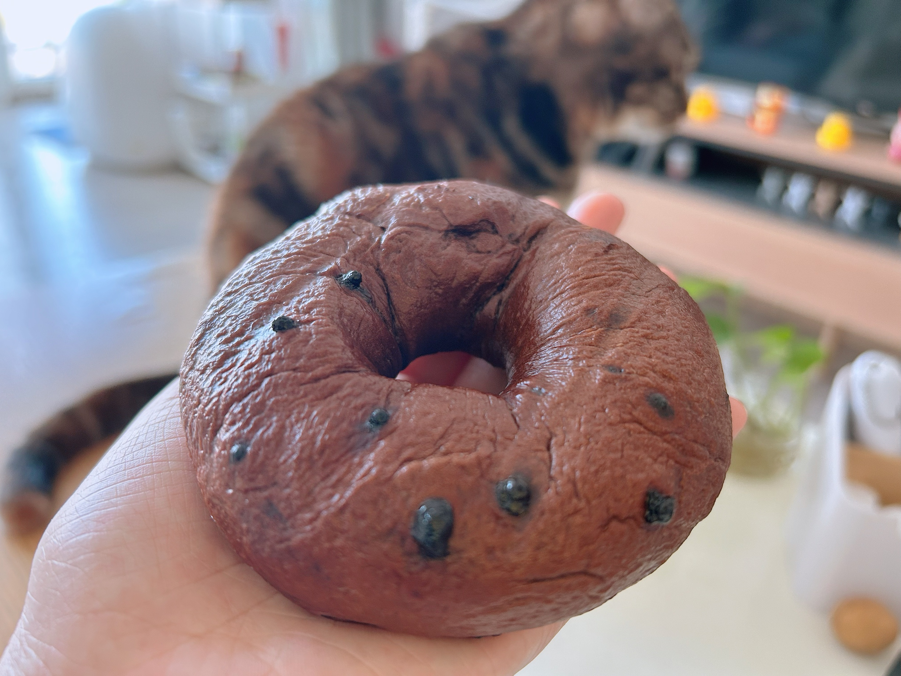

Bagels
|

Chocolate bagel
|
Pitaya bagel with cream cheese
|
This is a healthy bagels recipe that is oil-free and sugar-free. Maintain a powder-to-water ratio of 55%. If it is chocolate, add chocolate powder instead of flour; for fruits, use juice instead of water.
Ingredients for 4 bagels
- 200g bread flour
- 110g water
- 3g salt
- 3g Yeast
- 10g cocoa powder
Instructions
- 水合面团：
100g水+200g面粉+3g盐巴混合，揉到成团无干粉，保鲜膜包进冰箱冰0.5-1h拿出应有粗膜
- 首发出膜：
面团回温混合 10g水+3g酵母，揉5-10min出膜，松弛15min
- 切割松弛：
切割4等分，搓成小圆球，室温盖保鲜膜松弛10min（保鲜膜可以用剪开的保鲜袋、一会成型再发酵可再次利用）
- 擀面塑形：
面团滚成椭圆扁平、底部可以用手指抓扁，翻面从上向下卷（头尾、所有接缝处都捏合避免裂开），双手掌心搓只长条20cm，取一头压3cm的扇形、头尾相接，注意接缝捏合。
- 成型再发：
烤箱内35度，静置发酵30min（可复用保鲜袋）
- 烫贝果面：
为了不浪费糖，准备两个锅装a水多锅与b水少锅（100g水+5g糖）。两锅都是水开后保持最小火 要开不开状，贝果在水多锅两面各烫25秒，转移水少锅各烫5s（利于上色），贝果控水
- 烤箱开烤：
200度烤箱预热，烤箱中层上下火，底下铺上油纸烤15-18min